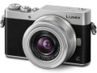

器材库 > APS及其以下画幅可换镜头数码相机 > DC-GX850 / DC-GX800 / DC-GF9

规格总览
产品类型
M4/3画幅可换镜头数码相机
日本地区型号
DC-GF9
发布日期
2017-01-04
影像规格
影像传感器
Live MOS
影像传感器尺寸
17.3×13.0mm
总像素
1684万
有效像素
1600万
色彩滤镜
原色滤镜
色彩空间
sRGB、AdobeRGB
静态图像格式
JPEG, RAW, MPO
静态图像尺寸
[4:3] 4592x3448(L)/3232x2424(M)/2272x1704(S)/1824x1368（配备微型三分之四系统标准的 3D 镜头）
静态图像质量
RAW、RAW + 精细、RAW + 标准、精细、标准MPO + 精细/MPO + 标准（配备微型三分之四系统标准的 3D 镜头）
画幅比
3:2, 4:3, 16:9, 1:1
短片格式
AVCHD, MP4
短片尺寸
MP4：3840×2160p, 1920×1080p, 1280×720pAVCHD：1920×1080p, 1920×1080i
音频格式
AAC 2ch, Dolby Digital 2ch
除尘系统
超声波除尘系统
镜头和对焦
镜头卡口
Micro 4/3
对焦系统类型
反差自动对焦系统
对焦点
对比侦测：49
对焦模式
AFS（单次）/AFF（灵活）/AFC（连续）/MF
AF辅助灯/光
有
手动对焦
支持
曝光控制
测光系统
1728 区域多重图样传感系统
测光模式
点测光, 多重测光, 中央加权测光
测光范围
0EV~18EV
曝光模式
程序自动曝光、光圈优先自动曝光、快门优先自动曝光、手动曝光
创意滤镜
富有表现力/乡愁怀旧/旧时光滤镜/高基调/暗色调/深棕色/单色/动态单色/颗粒单色/柔滑单色/印象艺术/高动态/正片负冲/玩具相机效果/鲜艳玩具相机效果/漂白效果滤镜/微型画效果/柔焦/幻觉滤镜/星光滤镜/单点色彩/阳光滤镜
快门速度
静止图像：时间（最长 60 秒），1/16000 - 60（快门类型为自动）运动图片： 1/16000 - 1/25
闪光同步速度
短于 1/50 秒
曝光补偿
±5EV以1/3EV级调整
自动曝光锁
有
自动包围曝光
1/3、2/3 或 1 EV 步长时 3、5、7 张图像，最大值 ±3 EV，单张/连拍
ISO感光度
自动，200-25600（扩展模式：100-25600）
白平衡
自动/日光/阴天/阴影/卤素灯/闪光灯/白平衡预设 1、2、3、4/色温设置
自拍
10 秒，3 张图像/2 秒/10 秒
连拍
10 fps
闪光灯
内置闪光灯
弹出式
闪光模式
自动*、自动/红眼消除*、强制闪光、强制闪光/红眼消除、慢速同步、慢速同步/红眼消除、强制关闭 * 仅限 iA、iA+。
闪光指数
GN5.6 等效 (ISO200 ・m)/GN4.0 等效 (ISO100 ・m)
闪光补偿
±2EV以1/3EV级调整
取景器/显示屏
LCD类型
TFT LCD
LCD尺寸
3.0英寸
LCD像素
104万
视野率
100%
LCD特性
触摸屏, 翻转屏
文件输入/输出
存储卡
microSD, microSDHC, microSDXC
数据接口
微型USB
视频/音频接口
D型HDMI接口
无线功能
Wi-Fi
电源
电池
可充电锂电池，7.2 VDC，680 mAh
续航能力
采用 H-FS12032/H-FS35100 约 210 张图像采用 H-PS14042/H-H020A 约 200 张图像
机身规格
颜色
银色, 黑色, 粉色, 橙色
尺寸
106.5×64.6×33.3mm
重量
仅机身约239g / 含电池和存储卡约269g
其它
支持语言
中文（简体）, 中文（繁体）, 英语, 日语, 法语, 德语, 意大利语, 韩语, 俄语, 西班牙语
工作温度
0 - 40℃
工作湿度
10 - 80%
该产品暂无存档的网友点评
产品图 / 样片
DMC-GX850
评测 / 相关文章
- 详细内容 （存档）
- 4K全普及 松下GF9评测 （存档）
- ［试用］松下GF9实拍样张赏析 （存档）
- ［资讯］松下推出LUMIX GF9单电数码相机 （存档）
相关文章
- ［试用］4K全普及 松下GF9评测 （存档）
- ［试用］松下GF9实拍样张赏析 （存档）
- ［资讯］松下推出LUMIX GF9单电数码相机 （存档）
- ［资讯］松下正式发布Lumix GF9 DMC-GX850 （存档）
- ［影像］松下GF9的粉色少女梦 （原站已下线）